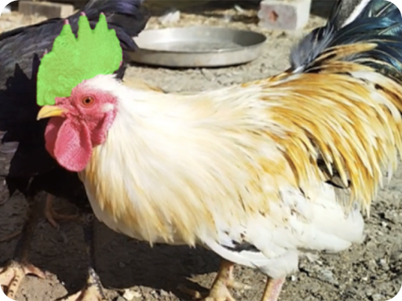
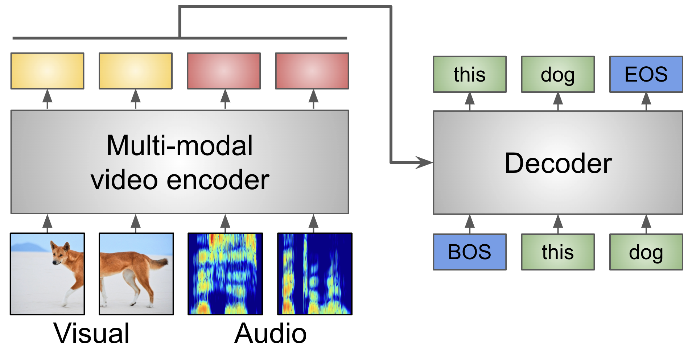
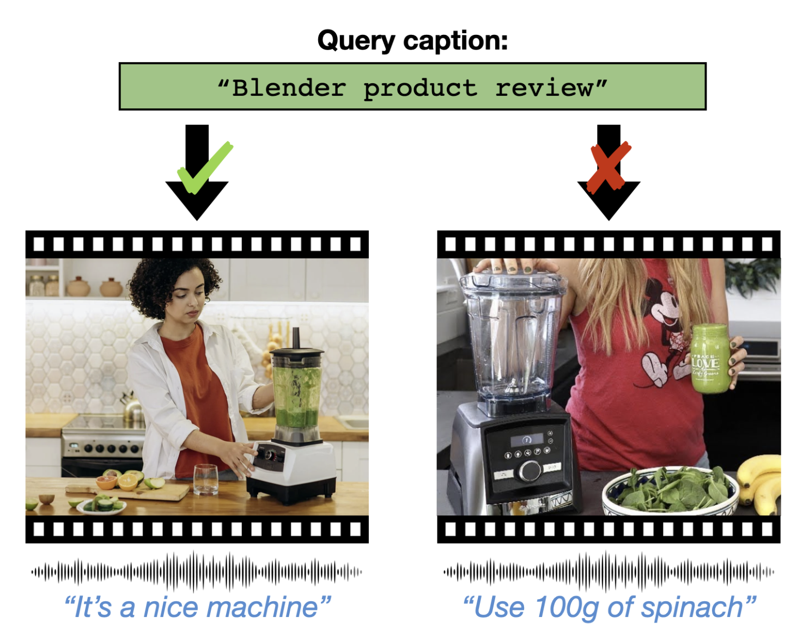
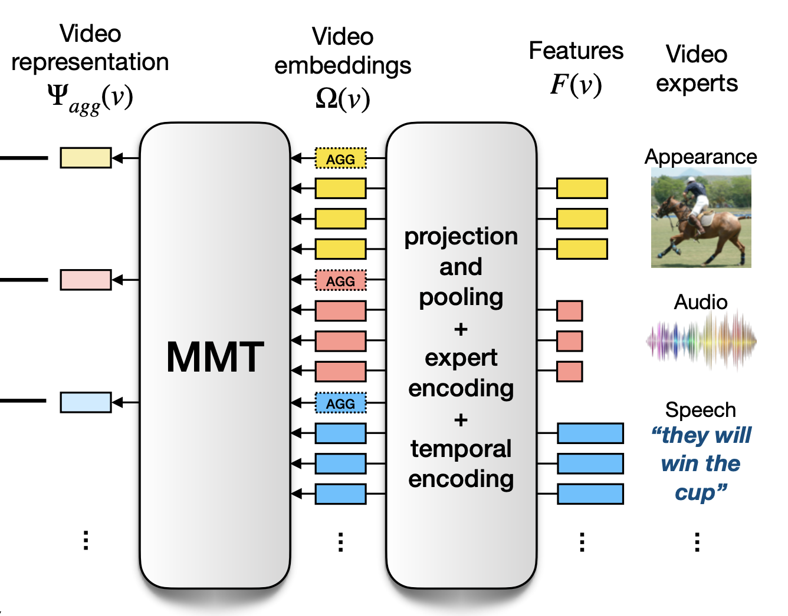
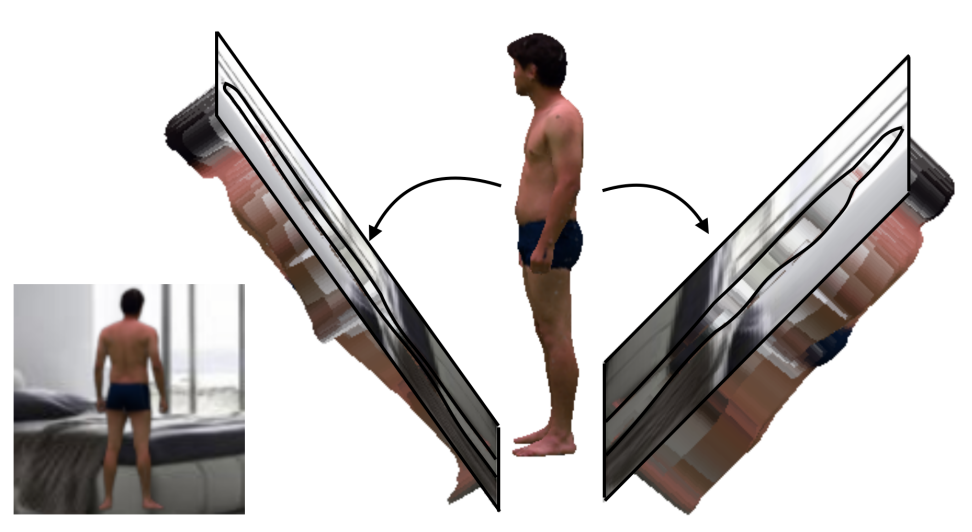

|
Valentin Gabeur
AI researcher at Google DeepMind (Gemini), specializing in multi-modal learning. Postdoc at Meta AI (SAM 2), PhD from Inria, MSc from Toulouse University, MSc from Icam. Former mechanical engineer with 6 years of experience in industrial automation.
Email /
CV /
Google Scholar /
LinkedIn /
Twitter /
GitHub
|
|
|

|
SAM 2: Segment Anything in Images and Videos
Nikhila Ravi*, Valentin Gabeur*, Yuan-Ting Hu*, Ronghang Hu*, Chaitanya Ryali*, Tengyu Ma*, Haitham Khedr*, Roman Rädle*, Chloe Rolland, Laura Gustafson, Eric Mintun, Junting Pan, Kalyan, Vasudev Alwala, Nicolas Carion, Chao-Yuan Wu, Ross Girshick, Piotr Dollár, Christoph Feichtenhofer*
arXiv, 2024
paper / demo / project page / blog / dataset / github
Promptable visual segmentation in images and videos.
|
|

|
AVATAR: Unconstrained Audiovisual Speech Recognition
Valentin Gabeur*, Paul Hongsuck Seo*, Arsha Nagrani*, Chen Sun, Karteek Alahari, Cordelia Schmid
INTERSPEECH, 2022
arXiv / project page / bibtex
Leveraging the full frame visual context to improve speech recognition in videos.
|
|

|
Masking Modalities for Cross-modal Video Retrieval
Valentin Gabeur, Arsha Nagrani, Chen Sun, Karteek Alahari, Cordelia Schmid
WACV, 2022
arXiv / bibtex
Pre-training strategy for learning multi-modal fusion from unlabelled videos.
|
|

|
Multi-modal Transformer for Video Retrieval
Valentin Gabeur, Chen Sun, Karteek Alahari, Cordelia Schmid
ECCV, 2020 (Spotlight paper)
arXiv / code, models, data / bibtex
Cross-modal architecture to encode language captions and videos in a common embedding space.
|
|
|
CVPR 2020 Video Pentathlon Challenge: Multi-modal Transformer for Video Retrieval
Valentin Gabeur, Chen Sun, Karteek Alahari, Cordelia Schmid
CVPR Video Pentathlon Workshop, 2020 (First place)
report /
paper /
challenge /
recording
Winning approach for the CVPR 2020 Video Pentathlon Challenge, a video retrieval competition.
|
|

|
Moulding Humans: Non-parametric 3D Human Shape Estimation from Single Images
Valentin Gabeur, Jean-Sebastien Franco, Xavier Martin, Cordelia Schmid, Gregory Rogez
ICCV, 2019
arXiv / bibtex
Efficient 3D shape representation through the combination of depth maps.
|
|
{kind=link}